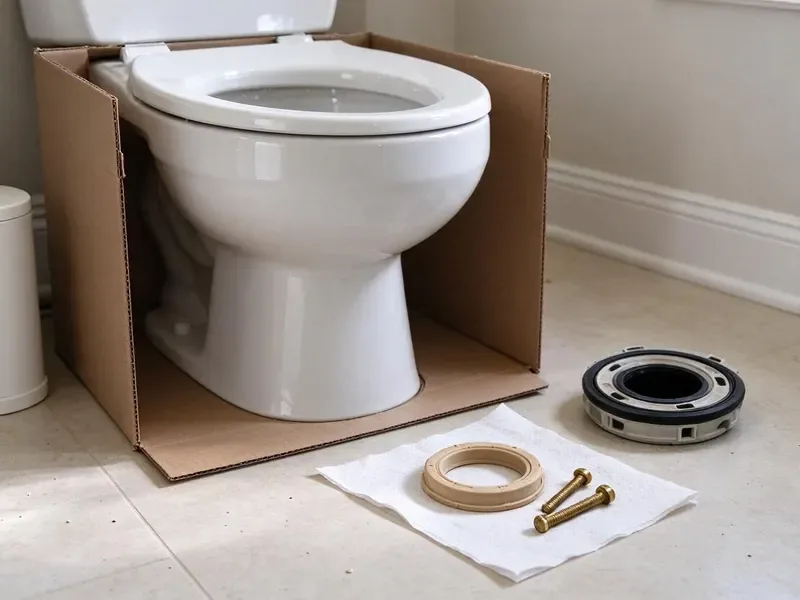

Faucet Installation in Ceres, CA
Kitchen, bath and bar faucets installed in Ceres, CA by FBL Plumbing, with new supply lines and a dry-towel check on every connection.
- Same-Week Scheduling
- Touchless and Pot Fillers
- Clean Work Area
- Customer Faucets Welcome

Ready to Get That New Faucet Hooked Up in Ceres, CA?
Book a time that suits you, with your faucet or one we bring.
New Faucets, New Supply Lines, Ceres, CA
FBL Plumbing installs faucets in Ceres kitchens and baths. Before we mount anything, we count the sink holes and measure the deck, because a widespread faucet on a single-hole sink is a return trip nobody wants. New braided lines go on every job. Then we check that hot sits on the left and cold on the right.
Our expertise includes:
- Kitchen Faucet Hookups
- Touchless Faucet Power and Sensor Setup
- Pot Filler Rough-In and Trim

Additional Bathroom Plumbing Services in Ceres, CA
From toilets to showers, our bathroom plumbing team in Ceres, CA handles repairs, installs, and upgrades with tidy, code-compliant work.


Customers
Why Choose FBL Plumbing for Faucet Installation in Ceres, CA?
Ceramic disc cartridges last years if the line is flushed first. Sand and pipe scale knocked loose during removal go straight into the new cartridge unless you run the lines into a bucket. We flush every time.
- Shutoff Check, We test the stops and flag any that weep.
- Code Compliant, Hookups follow Northern California plumbing code, with vacuum breakers where a hose can attach.
- Fit Check, We count the sink holes and measure deck thickness before mounting.
Citywide Coverage
Condos and single-family houses in Ceres get the same install. In a condo we check with the building about shutting off a riser valve before the day of the job. That avoids a wasted trip.
Experienced Team
Every plumber on our crew is licensed. New hires ride along on faucet and fixture jobs for weeks before they take calls alone. That stretch is where they pick up details, like which faucets come with plastic coupling nuts that crack under a wrench.
Safety-First Approach
Water off first, always. We close the stops and open the faucet to drain the lines before a single nut comes loose, and if a stop will not seal we shut the main. A towel goes on the cabinet floor.
Trusted Certified Ceres Plumbing Services Professionals
At FBL Plumbing, we are proud to offer certified plumbing services throughout Ceres, CA. Credentials matter in this trade. Every repair, install and maintenance visit follows strict safety and quality rules, and the plumbers doing the work carry recognized industry credentials.
Call Us Now PHCC Plumbing Contractor Recognition
PHCC Plumbing Contractor Recognition Better Business Bureau (BBB) Accreditation
Better Business Bureau (BBB) Accreditation Angi Certified Pro
Angi Certified Pro ISO 9001 Quality Management Certification
ISO 9001 Quality Management CertificationFaucet Installation Work We Do in Ceres, CA
Outdoor Faucet and Hose Bib Installation in Ceres
Hose bibs get more abuse than any indoor faucet. Even in mild areas, wrapping irrigation backflow devices before a cold snap is cheap insurance against a surprise leak. Where pipes can freeze, we install a frost-free sillcock that closes the valve inside the warm part of the wall. Code calls for a vacuum breaker on every hose bib. We use models with the breaker built into the body.

Utility Sink Faucet Installation in Ceres, CA
Utility tubs see hot water and harsh cleaners. A utility faucet needs a brass body and a firm mount, because people yank hoses off it, and a loose faucet cracks its own supply connection. The spout gets a vacuum breaker. We check these joints twice, since a garage tub can drip for months before anyone notices.
Kitchen Faucet Installation in Ceres
Pull-down sprayers get yanked a thousand times a year. That is why we clip the hose weight at the right spot on the hose and check that the hose does not snag on the shutoffs or the disposal when it pulls back, which is where most early kitchen leaks start. Both stops get new braided stainless supply lines. Before we pack up, we run both sides for several minutes and check the cabinet floor with a dry paper towel.
Laundry Sink Faucet Installation in Ceres
Laundry sinks get a faucet with a threaded spout. We mount wall or deck models with an integral vacuum breaker, since a hose left in a sink full of soapy water is a textbook backflow risk. Supplies are strapped so they cannot rub.
Bathroom Faucet Swaps in Ceres, CA
Swapping a bathroom faucet usually means swapping the pop-up drain too, because the lift rod connects through the faucet body. The drain flange goes in on plumber's putty, or on silicone for cultured marble and stone that putty can stain. Handles get lined up last. We set them so both close at the same angle.
Pot Filler Installation in Ceres
A pot filler needs its own cold line. The new cold line comes up inside the wall behind the cooktop, with an accessible shutoff valve so you can service the filler later. The arm folds flat when not in use. We pressure-test the line before the backsplash goes up.
Bathroom Faucet Installation in Ceres, CA
Lavatory faucets in Ceres homes mostly come as 4-inch centerset or 8-inch widespread, with single-hole models on newer vanities and vessel tops. Rural properties around Ceres often rely on private wells, which may need filtration for iron, sediment, or other minerals. Scale forms fast under a base gasket that is not seated flat. Hole spacing gets measured before you order. We install a matching pop-up drain too, which replaces the old drain gasket while we are under there.

Bar and Prep Sink Faucets in Ceres, CA
Island prep sinks and wet bars get their own faucet. We hook bar faucets to an undersink filter cartridge when you want filtered water there, and we leave the cartridge where you can swap it without unloading the cabinet. Outdoor kitchens use fixtures rated for sun and weather. Even in mild areas, wrapping irrigation backflow devices before a frosty night is cheap insurance against a surprise leak. Outdoor lines get insulated or set up to drain down to match.
Local Faucet Installation Near Me, Ceres, CA
Homes around Ceres range from older ranches with copper stubs to new builds with PEX manifolds. Our trucks carry fittings for both, and for the galvanized nipple that sometimes has to be replaced first. We never force a fitting.
Booking is simple. Call (669) 319-2034 with the faucet brand and model. While you are on the phone we check the spec sheet for hole spacing and deck thickness, so there are no surprises at the sink. You get a two-hour arrival window.
FBL Plumbing at a Glance
- Licensed and insured plumbers serving Ceres, CA
- Same-day appointments and 24/7 emergency response
- Clear written estimates, no hidden fees
- 4.8-star rated by 834+ Northern California customers
Ceres Map
Ceres Information
- Population
- 48,397
- Area codes
- 209/559/408
- Service area
- Ceres and towns within a 40 mile drive
- Nearby
- Modesto, Turlock, Manteca, Tracy
A faucet install in Ceres, CA comes down to the connections you cannot see. We use new braided supplies and check each joint dry before we leave.
Talk to a Plumber
Call FBL Plumbing for honest, reliable plumbing from people who know the trade in Ceres, CA.
Our Specialized Plumbing Services in Ceres, CA
At FBL Plumbing, we handle the full list of plumbing services across Ceres, CA. From leak detection to full system installs, our team works fast and charges fair prices on homes and commercial properties alike. Explore our core services below:


From the Box to Running Water in Ceres, CA
Our faucet installs in Ceres, CA follow the same steps on every job.
Get a Flat Price
Call (669) 319-2034 with the faucet type and sink layout. We quote the labor flat.
Check the Stops
We test the shutoff valves first and replace any that weep before the new faucet goes on.
Flush and Test
Lines get flushed into a bucket so grit stays out of the cartridge. Then both sides run while we check every joint.
Frequently Asked Questions About Faucet Installation in Ceres
Labor for a Ceres faucet installation usually falls between $150 and $400. The low end is a straight swap on good shutoffs with the old faucet coming out clean. Seized nuts push it up. The faucet itself is a separate cost, and that can run from under a hundred dollars to several hundred for a premium pull-down.
Only if the old faucet was the problem. A clogged aerator or a scaled cartridge will choke flow at one fixture, and a new faucet fixes that right away. Low pressure everywhere is a different problem. That usually points to the pressure regulator or old galvanized pipe.
We do, and it is part of the price. We haul off the old faucet and its supply lines, so there is nothing left in your cabinet but the new work. Solid brass bodies get recycled.
For a busy kitchen, usually yes. Being able to start the water with an elbow or wrist while your hands are messy keeps the handle cleaner and saves a lot of wiping. The tradeoff is a higher price and a power source.
It depends on what is under your sink. A clean cabinet with working quarter-turn stops is a fair DIY job, but corroded multi-turn valves and rusted mounting nuts are where a forty-minute project becomes a weekend. Our installs include a labor warranty.
Any brand you bring, really. Most of what we hang is Moen, Delta, Kohler, Pfister or American Standard, with Grohe and Brizo a few times a month. Off-brand online faucets we install too. Just know replacement cartridges for those can be hard to find later.
About one to three hours for most jobs. Simple swaps on good shutoffs finish closer to an hour. Drilling a new hole in stone or replacing corroded stubs pushes the job toward three hours, sometimes a bit more.
Both, and we do them often. A touchless faucet needs power and a dry mounting spot, and a pot filler needs a cold line inside the wall behind your cooktop. Pot fillers are easiest before tile.
What People Are Saying About Our Plumbing Experts?

Nathan E.
Our tankless heater kept throwing an error code and shutting off mid shower. The tech flushed the heat exchanger, which was full of scale, and replaced a bad flow sensor. Hot water has been steady for half a year now.
Water Heater Repair · Merced, CA
Jessica T.
We were adding a gas range in a kitchen remodel and needed a new line run from the meter. The plumber pulled the permit, ran the pipe through the crawl space, and had it inspected and approved within the week.
Gas Line Repair · Stockton, CA
Megan L.
Our upstairs tub drained so slowly that every shower turned into a bath. FBL Plumbing pulled a wad of hair out of the stopper and then snaked the line past the trap. Three months later it still drains fast.
Drain Cleaning · Manteca, CA
Diane F.
My kitchen faucet had dripped for months and I finally got tired of hearing it at night. FBL Plumbing came out the next morning, replaced the cartridge and the O rings, and tightened a loose base that was letting water under the sink.
Faucet Repair · Modesto, CAMonica A.
Our water bill nearly doubled in one month with no change in how we used water. The tech checked the meter, heard the leak under the hallway with his equipment, and opened a hole about a foot square. Fixed the same day.
Slab Leak Repair · Stockton, CA
Mark T.
The floor drain in our office break room backed up every few weeks. The plumber ran a cable, then put a camera down and found roots at a joint about thirty feet out. Seeing it on the screen made the decision easy.
Drain Cleaning · Manteca, CA